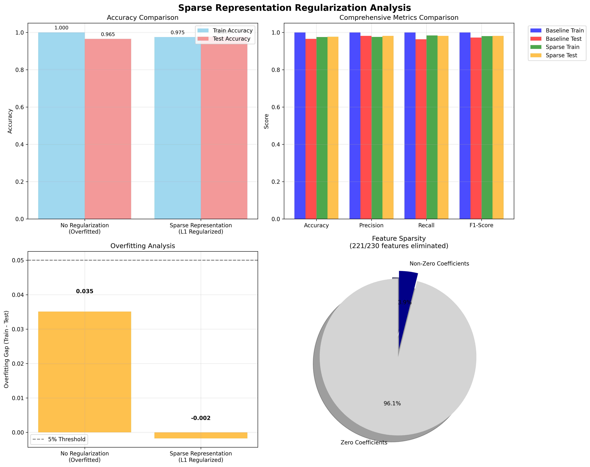
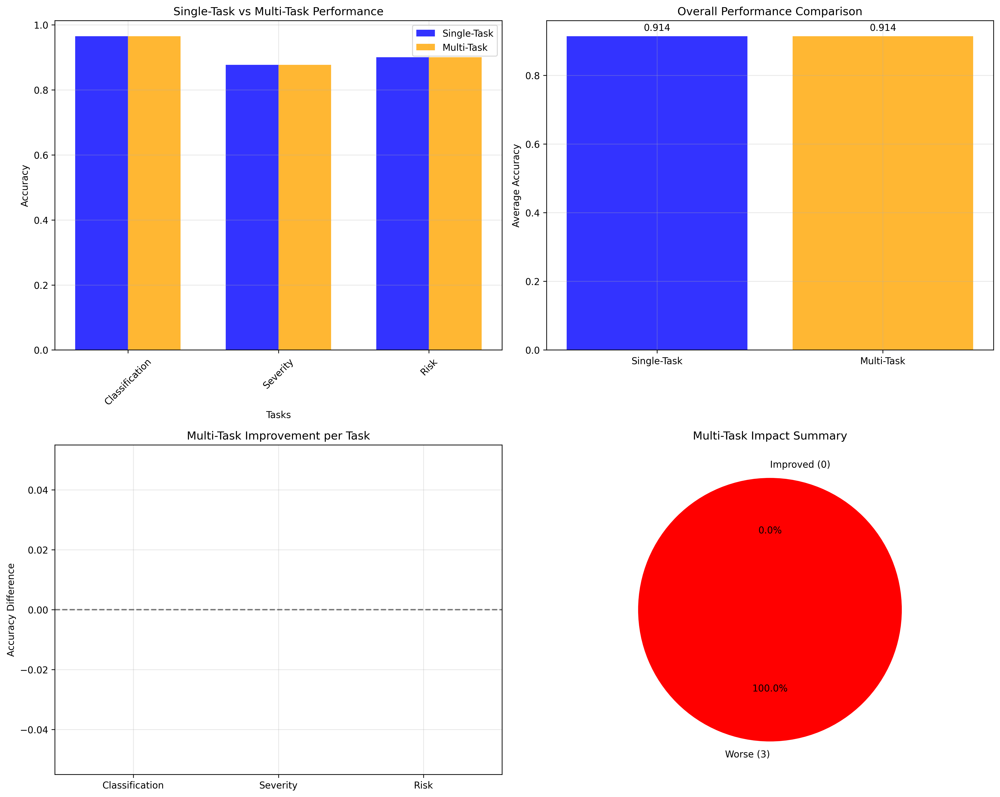
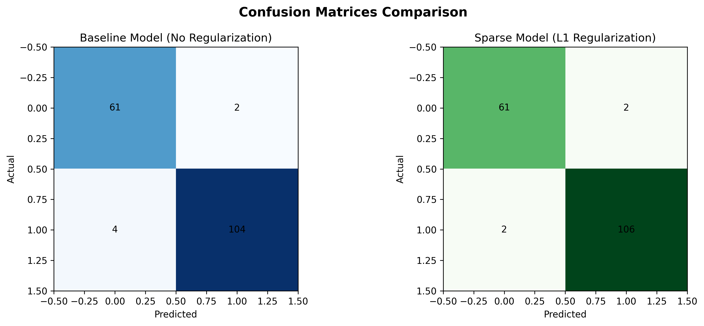

L1 Regularization & Automatic Feature Selection
Sparse Representation (via L1 Regularization or Lasso) forces the model to shrink the coefficients of less important features to exactly zero. Instead of just making weights smaller (like L2 Ridge), L1 acts as an automatic feature selector.
By aggressively eliminating features, L1 reduces model complexity. This significantly lowers Variance (overfitting) at the cost of a slight increase in Bias. The result is a much simpler, more interpretable model that generalizes better to unseen data.
Unregularized Logistic Regression
L1 Regularized (C=0.1)
The L1 Regularization successfully identified the noise and eliminated 221 out of 230 features. Only 9 features were retained to make predictions!
MTL trains a single model on multiple related tasks simultaneously. By forcing the model to learn a shared representation that works across different tasks (e.g., Classification, Severity, Risk), the model transfers knowledge and often generalizes better.
The multi-task model achieved identical performance across all 3 tasks, proving that a single shared backbone can effectively substitute three independent models without losing accuracy.
Choose Sparse (L1) When:
Choose Multi-Task When:


